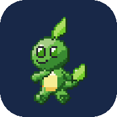
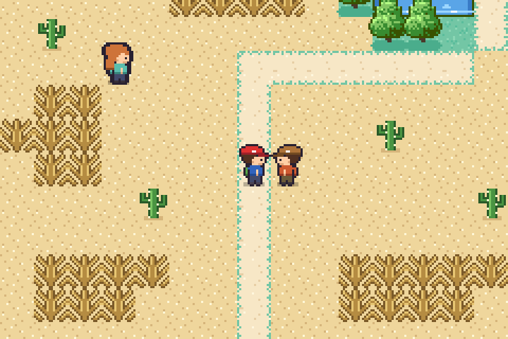
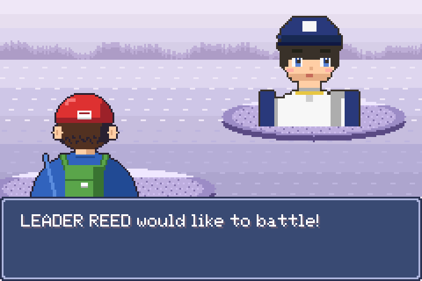
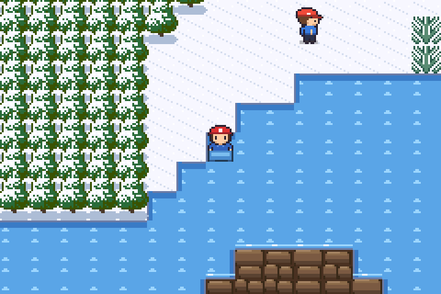
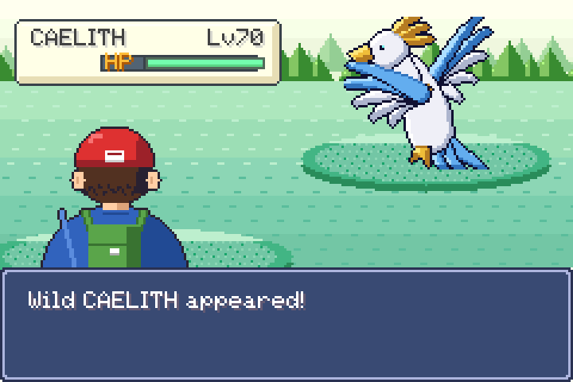
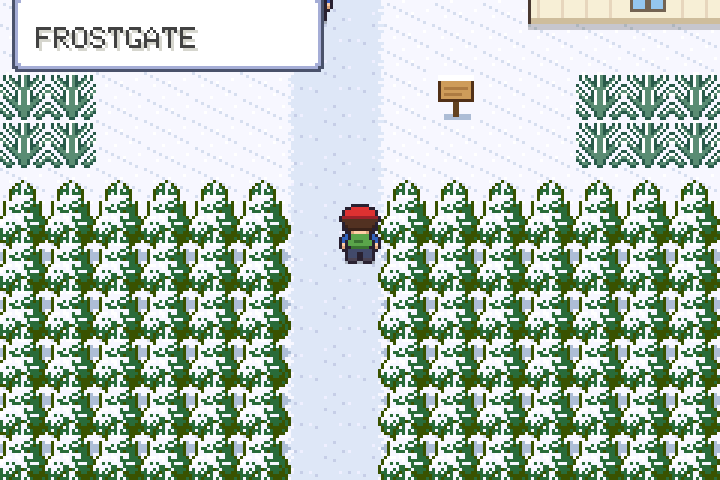
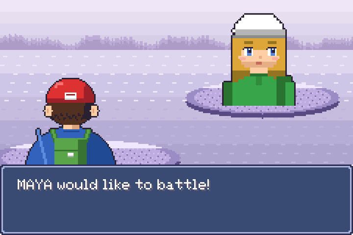
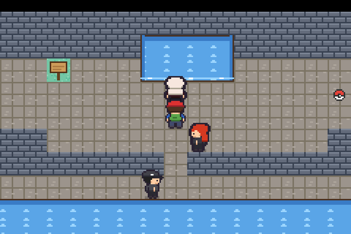
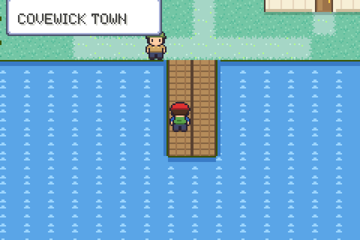

Joshémon is a monster-collecting RPG written in C for the Game Boy Advance. Catch 105 creatures, beat eight gyms and the league, and wake three legends.
Free. 2.1 MB. Plays in mGBA, or on a real GBA with a flash cart.
The game runs in an open-source emulator (EmulatorJS) that loads only when you press play. Your save stays in this browser. Arrow keys move. Keyboard and gamepad buttons are in the player's controls menu.








Every creature, every town and every melody is our own. There are three legends on top of the 105.
Eight gyms, a rival, the ASH CIRCLE, VICTORY ROAD, the ELITE FOUR, a champion and a HALL OF FAME.
Hunt the third legend, explore the CEDAR COAST and the ELDER GROTTO, run up a streak in the BATTLE HALL, and fill the DEX to earn the diploma.
Damage, natures, abilities, catching, EXP, status and evolution are worked out the way the 2003 games did them.
SURF, the BIKE, fishing, CUT trees, STRENGTH boulders, dark caves, ice floors that slide, a desert with sandstone ruins, and FLY.
35 songs on the GBA's four sound channels, with sampled brass, strings and drums.